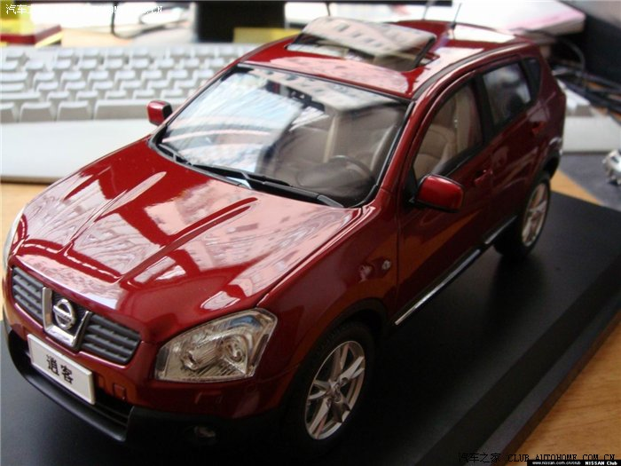

·活动名称：寻找NISSAN安全之星 上传你的安全秘籍
我要报名
活动类别：其他
·所在城市：全国
·活动地点：全国
·活动时间：2009-06-18 至 2009-08-05
·每人花销：0元
·需要人数：不限人数
·征集截至日期：2009-07-31
·活动说明：??? 东风日产高性能“都市跨界车”逍客以47.2分荣膺C-NCAP测试五星佳绩。逍客成为目前国内同级别车型中第一款同时获得欧洲NCAP和中国C-NCAP“双五星”安全桂冠的SUV。
关于逍客或者日产品牌系列车系的安全性，你有什么话要说，或者在日常用车中你有什么特别的安全秘籍吗？如果你在“自驾游安全”、“保护家人”、“保护行人”、“安全配置”、“驾驶技巧”五方面任一方面，有自己独到的安全秘籍，不要再私自收藏，赶紧拿出来跟大家一起分享吧。最受网友欢迎的“秘籍主人”将会获得丰厚大奖哦！
让我们一起来寻找NISSAN安全之星！
秘籍要求：
1、原创内容，如经发现有摘抄嫌疑，将取消该名选手参赛资格；
2、必须为NISSAN安全用车内容；
3、首段须注明秘籍类别：自驾游安全、保护家人、保护行人、安全配置、驾驶技巧；
点击查看：
逍客动力省油专题
秘籍上传时间：6月18日-7月31日
评奖时间：8月1日-8月4日
公布获奖时间：8月5日
奖品： 一等奖：500元油卡+逍客金属车模一台? ?? ?5名：
二等奖：300元油卡+逍客遥控车模一台? ?? ?5名：
三等奖：200元油卡? ?? ?10名：
评选规则：
获奖车友将由3位汽车之家资深编辑结合网友投票情况，依据秘籍字数、质量、受欢迎度等获得一、二、三等奖，共20名网友。??
获奖结果将于7月31日在论坛进行公布，工作人员在8月1日—8月3日期间与获奖网友电话联系，确定网友身份及详细地址，并告知网友奖品情况及将在8月10日之前将奖品邮寄到网友手中。